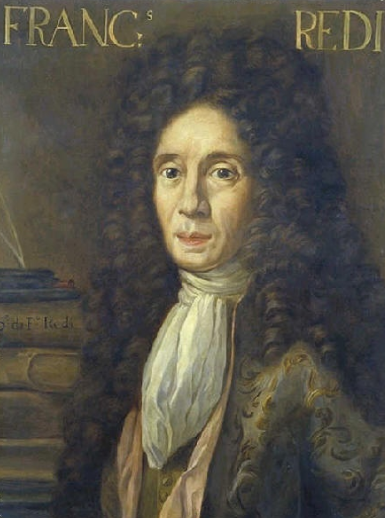

Francesco Redi
Hijo de un médico de la corte de los Médici, Redi estudió con los jesuitas en su ciudad natal y se graduó en 1647 en Medicina por la Universidad de Pisa. En 1649 empezó a hacer experimentos con diversos animales, hasta llegar a demostrar que la teoría de la generación espontánea era una farsa. En 1664 Redi explicó cómo el veneno de serpiente está relacionado con su mordedura, una idea contraria a la creencia popular,2 dando origen también a la toxicología experimental.
Redi fue, desde 1654, el primer médico de los grandes duques de Toscana Fernando II y Cósmico II. Si bien comenzó estudiando las serpientes y sus mordeduras, se dedicó sobre todo a la parasitología. Por su labor puede considerarse como el fundador de esta rama de las ciencias naturales, especialmente de la helmintología, cuyas bases dejó plasmadas en su tratado de 1684. Su experimento de 1668 mostrando la ausencia de gusanos en un frasco cerrado donde se había dejado carne pudriéndose asestó un duro golpe a la teoría de la generación espontánea. En sus investigaciones usó ampliamente la disección y la observación con el microscopio.
Redi también fue un celebrado poeta y en 1665 fue nombrado catedrático de lengua toscana en la Academia Florentina. Entre sus célebres poesías se encuentra "Verde y gris", famosa desde su tiempo.
Experimento de Francesco Redi
En una época en la que se creía tanto en la creación como en la generación espontánea, Francesco Redi era uno de los que dudaba de esta última creencia. Para comprobar si era cierta, realizó el siguiente experimento: colocó un trozo de carne roja en tres jarras iguales, la 1.ª la dejó abierta, la 2ª la tapó con un corcho, y la 3ª la dejó cubierta con un trozo de gasa bien atada. Después de unas semanas, Redi observó que en la jarra, la que estaba abierta, habían crecido larvas. En la 2ª jarra y en la 3ª, su interior estaba podrido y olía mal, pero no había crecido ninguna larva. Por lo tanto, la carne de los animales muertos no puede engendrar gusanos a menos que sean depositados en ella huevos de animales.
Pensó que la entrada de aire en los frascos podría haber influido en su experimento, por lo que llevó a cabo otra prueba: puso carne roja y pescado en un frasco cubierto con una gasa; después de un largo tiempo vigilando, descubrió que las moscas dejaban sus huevos no en el frasco, sino en la gasa.
Los resultados fueron exactamente los mismos que en el primer experimento. A pesar de los resultados obtenidos y los de otros autores, la creencia en la generación espontánea seguía estando muy extendida, y Francesco Redi se vio obligado a admitir que en ciertas ocasiones sí se podía dar la generación espontánea. Su obra más importante, donde expuso los resultados de sus experiencias, la escribió en el año 1684.
Portada de la obra Experimentos acerca de la generación de los insectos, hechos por Francesco Redi, caballero aretino y académico de la Crusca, escrito por él en una al ilustrísimo señor Carlo Dati; impresión de 1688.